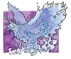
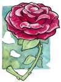

善良神祗
以下是六位善良神祗的资料。帕拉丁并不在其中，因为他放弃神位成为了凡人。

布兰查拉（Branchala）
阿斯塔林（Astarin，西瓦那斯提）阿斯特拉（Astra，奎灵那斯提），巴尔迪隆（Bardilun，索巴丁），吟游诗人之王，布兰（Bran，亚苟斯），艾斯塔林（Estarin，海精灵），园丁（米萨斯），生命之歌，歌唱大师（古德兰）
中等神祗
居住位面：创生穹顶
徽记：吟游诗人的竖琴或银制长笛
颜色：黄和绿
天体徽记：竖琴星座
阵营：混乱善良
神职：音乐，诗歌，吟游诗人
信仰者：吟游诗人，精灵，坎德人，旅行者
牧师阵营：混乱善良，混乱中立，中立善良
领域：混乱，善良，机运，诡术
偏好武器：细剑（“叶之刃”）
喜好服饰：黄色和绿色的长袍、法衣或套装，银制虔信勋章（medallion of faith）
吟游诗人之王布兰查拉通过悦耳的音调和永不停止的生命之歌代给世间的人们带来欢乐。心脏的跳动是一首交响曲的一个部分，它将世界上所有人连接起来共同聆听生命的和谐之音。作为哈巴库克的伙伴，布兰查拉努力把自然世界中音乐的美丽之处展现给其中的所有生物。精灵、坎德人、吟游诗人和德鲁伊崇敬他，因为他具有对灵魂内在美的热爱。
布兰查拉的牧师们的任务就是把音乐和艺术传播到世界各地，教授克莱恩的人们书写和交谈的语言的美妙之处，并且教授他们通过对任何形式艺术的欣赏来感受快乐。他的牧师在许多社会阶层中――特别是精灵和坎德人的社团中――都有特殊的地位，他们在几乎所有节日和典礼中都扮演了重要的角色，从婚礼到葬礼，从春日的舞蹈到军队的出征。布兰查拉的牧师把音乐和故事既作为娱乐的工具也当作教育的手段。
与哈巴库克的信徒们很相似的是，布兰查拉的牧师们的组织十分松散。引导祭司们向年轻的牧师们教授布兰查拉的信条和向他祈祷的方法，然后这些年轻的牧师就可以自由地传播布兰查拉的信条和音乐了。布兰查拉的祭典在不同的社团中举行时间并不相同。信徒和祭司在生命庆典时会邀请社团的人来参加。在庆典过程中，牧师们也会寻找新的信仰者。在内心里，布兰查拉的牧师们是漂泊的人，他们没有一定社团，也不遵循一定的道路。他们从一个村落旅行到另一个村落，通过歌曲和故事来净化人们的心灵。他们对物质只有很少的占有欲，并且会把自己表演所得的收入全部用来救济生活困难的人。
教义
让神圣之乐在生命的舞蹈中引导你的步伐。艺术只为了艺术本身而存在。无论你的观众是一名国王还是一名乞丐，表演都要尽最大努力。要尊敬自然，因为它是生命之源。总是要用一个好的故事来结束一天。使用你的天分来造福那些有需要的人。

哈巴库克（Habbakuk）
渔者阿布库（Abbuku the Fisher，海精灵），蓝凤凰（亚苟斯，奎灵那斯提，西瓦那斯提），渔者之王，天空之主（巴力佛，古德兰），海洋之主（米萨斯）
中等神祗
居住位面：创生穹顶
徽记：蓝色的凤凰
颜色：深蓝色和白色
天体徽记：蓝凤凰星座
阵营：中立善良
神职：动物，水，热情
信仰者：巡林客，海员，德鲁伊，农民
牧师阵营：混乱善良，守序善良，中立善良
领域：动物，善良，水
偏好武器：弯刀（“渔王之舵”）
喜好服饰：浅蓝色的无兜帽长袍以及深蓝色的带兜帽披肩，银制虔信勋章（medallion of faith）
以“渔人之王”而闻名的哈巴库克创造并统治着陆地和海洋的所有生物。巡林客和海员们尤其敬畏他，并且在面对海洋和风暴的女神赛波音时，向他寻求庇护。哈巴库克按照自己的形象创造生物，他如同狼一般凶猛无情且残酷，同时却又温和驯服如兔子一样。哈巴库克是自然界中捕食者与被捕食者间和谐统一状态的具体体现，因此人们害怕他和热爱他的程度同样深。由于代表了自然界永恒的循环，哈巴库克也成为了超越死亡的永恒生命的象征，他的凤凰外形也证明了这一点。
哈巴库克的神职人员分为牧师和德鲁伊两部分。哈巴库克的牧师为了满足一些团体的需求而工作：协助捕鱼、狩猎、抵御动物的袭击或者照看牲畜。得益于此，在他们所属的地区他们都非常受人尊敬。与之相对，德鲁伊们则通常离群索居于深林之中，喜爱动物的社会更甚于人类社会。他们也因此被其他传教士看作是未开化之人和异教徒，一般人则只是简单地把他们当作发疯的老隐士。德鲁伊们不害怕也并未被禁止与那些侵入他们领地的人战斗。德鲁伊们守卫着他们的保护区域，对于那些怀有邪恶目的的闯入者，他们会迅速地施以惩罚。德鲁伊们也会尽快地救助那些处于困境的人，虽然因为缺乏社交技巧，他们可能会显得有些冷淡、暴躁或生硬。
所有哈巴库克的牧师和德鲁伊都会保护自然资源免遭破坏和挥霍。对于一名哈巴库克的牧师（不包括德鲁伊）而言，一生中必须有一次，要离开朋友和社会到各地修行，他们除了身着的衣物和一跟手杖外不能带任何东西。这种修行将会净化牧师的心灵，并教导他们什么是自然的真实之路和哈巴库克的真实之路。当牧师为他的神祗完成了一项任务（通常是面临威胁时保护或重建自然的面貌）或者哈巴库克赐予牧师一个征兆时，这一修行就可以结束。
生活在社会之中的牧师负责照管动物，无论是野生的还是驯养的。他们也可以进行一些简单的治疗，还可能协助本地的米沙凯的牧师。他们试着每天抽出一些时间来在野外与自然沟通并进行祈祷。如果一名牧师是虔诚的，那么没有动物会攻击他。
德鲁伊与社会生活很少有关系。他们只处理自己保护区域的安定，做一些类似种植树苗、喂养小动物、抵御森林火灾以及救助危难者（那些对自然至少怀有崇敬之情的人）的任务。
哈巴库克的牧师并没有很严密的组织，没有他们必须请示的最高权力者。牧师们可以从导师或者神祗自身那里学习教义，因为有些时候哈巴库克也会降临在那些信仰坚定而谦卑地寻找他的牧师身边。
对哈巴库克的牧师最重要的神圣之日就是海洋之宴（The Feast of the Sea）。该庆典首先由哈巴库克的牧师在亚苟斯王国建立之时创立，它在每个五月的第十三天举行。该节日是亚苟斯人庆祝的少数几个神圣日之一。对于那些临海的地区，在这一天人们所要做的是，向海洋之神奉上新的船只或者献上小型的私人礼物，以祈求渔者之王保佑船只免受赛波音的袭击。这一天的重点是所有船只都参加的大赛舟会（the Great Regatta）。胜利者会被授予海洋之主的称号，并且在晚宴中会被当做贵宾看待。
教义
与自然和谐共存，尊敬所有有生之物。善待动物，因为他们是神祗赐予世界的礼物。生存于和谐的自然中，便与诸神相接近。掠夺大地之人乃是敌人。随时准备为了你所关心的大地和其上的生灵而战。

奇力-乔里思（Kiri-Jolith）
寇里基（Corij，亚苟斯），帝王（米萨斯），乔里思（卡洛里/塔西斯），刀锋奇力（索巴丁），克里乔（Krijol，海精灵），战士库安（Qu’an the Warrior，乌依甘<Uigan>），正义之剑
中等神祗
居住位面：创生穹顶
徽记：一支野牛角，或者带角的战斧（索巴丁，卡洛里）
颜色：棕色和白色
天体徽记：野牛头星座
阵营：守序善良
神职：战争，勇气，荣誉
信仰者：战士，圣剑骑士
牧师阵营：守序善良，守序中立，中立善良
领域：善良，力量，战争
偏好武器：长剑（“圣洁防御者”）
喜好服饰：金制的鳞甲以及棕色的外套，铜制虔信勋章（medallion of faith）
奇力-乔里思是掌管荣耀、尊敬、服从、正义和正当战争的神祗。他是帕拉丁和米沙凯的长子，也是哈巴库克的双胞胎兄弟。信仰正义的圣武士和战士们信奉奇力-乔里思，就像索兰尼亚骑士团――尤其是他所支持的圣剑骑士团――所做的那样。
奇力-乔里思的牧师们的任务是寻找邪恶和残暴之物，并对它们宣战。牧师们每天都要进行训练，以准备随时与邪恶战斗。他们的组织如同军队般严密，而且每一名牧师和圣武士都清楚自己在其中的地位。他们经常谈论自己的信仰，以提高聆听者的勇气和荣誉感。牧师们也会加入索兰尼亚骑士团，大部分都是加入圣剑骑士团。
在每个季度开始的时候，奇力-乔里思的牧师会举行一个名为狩猎日（the Day of the Hunt）的庆祝仪式。牧师们把这一天用来帮助人们改正错误并救助那些身处困境的人。
教义
行善即其自身之回报。荣誉与勇气即生命。懦弱应被斥责。为正当目的而战斗；斩尽邪恶之前绝不能退缩。

马哲理（Majere）
玫瑰上的螳螂（奎灵那斯提），曼苏斯（Manthus，亚苟斯），心灵之主，马瑟里（Matheri，西瓦那斯提，海精灵），传梦者那迪尔（Nadir the Dreamsender，米萨斯）
中等神祗
居住位面：创生穹顶
徽记：铜蜘蛛，单支玫瑰（奎灵那斯提，西瓦那斯提），螳螂（索兰尼亚）
颜色：铜色和红色
天体徽记：玫瑰星座
阵营：守序善良
神职：纪律，忠诚
信仰者：武僧，神学者，学者
牧师阵营：守序善良，守序中立，中立善良
领域：善良，秩序，冥想
偏好武器：空手打击（“仁慈的纪律”）
喜好服饰：红色或铜色的长袍，铜制虔信勋章（medallion of faith）
在所有的神祗中，马哲理可能是最接近于最高神思想的。在克莱恩于时间长河中不断运动的过程中，马哲理能够最好地理解创造世界的目的和最高神是如何展开其计划的。虽然马哲理的信徒很少，但他的牧师都很有影响力；克莱恩的最伟大的神学家和教师就是马哲理的神职人员，而且他的教义也影响了其他善良神祗的组织。
马哲理的牧师们被要求遵守一种严厉但是有益处的纪律。他们宣誓保持贫穷、服从命令并保留贞洁，他们专注于通过自我约束和对善良的深思来获得光明和圣洁。其中的许多人从事与武术有关的职业，以练习从身体和精神上控制自己，还有一些人练习武术是为了接受和传播神的启蒙，并且专注于澄清和理解善良诸神的教义。另外还有一些马哲理的牧师活动于世界各地，他们教导人向善、远离谎言和邪恶的诱惑，这些牧师都在修道院里接受训练。每个特定国家或地区的修道院都由一名高等修道士或高等女修道士（High Abbot or Abbess）掌管，担当这一职务的通常都是主管着该地区最大或最古老的马哲理神庙的人。高等修道士们必须轮流向马哲理的先知（the Prophet of Majere）汇报本地的情况。
马哲理的信徒们庆祝的主要圣日是螳螂之夜（the Night of the Mantis）。马哲理的牧师和僧侣把这一晚留出来用以斋戒、唱圣歌或者冥想。圣日从下午的早些时候开始一直持续到次日中午。夜晚能够帮助僧侣们把注意力重新集中在自我约束并为新加入者做榜样上。
在善良众神之中，马哲理是帕拉丁最亲密的朋友和顾问，他通常会向他建议最符合最高神意愿的行事方法。其他的善良神祗也非常注重马哲理的教导和预言。马哲理和亦为林在某种意义上处于对立状态。马哲理教导他的信徒要使自己与最高神的意愿相一致，从而获得启蒙，但亦为林更喜欢一种中立的方式。马哲理对邪恶诸神怀有强烈的敌对情绪，特别是奇魔须。
教义
生命之圣洁与纯粹召唤万物之灵魂。达此境界乃凡间生物之最高向往。战胜内心邪恶一心向善方能找到神圣。约束体内难以驾御的激情，并从中找寻自己的缺陷和长处。不要试图追寻名誉或任何容易腐烂的东西，而要去寻找光明带来的永恒的欢乐。对那些位居你之上的人要服从，对那些位居你之下的人要温和而严格。祈祷不可少，寻求真理也不可少。观察你周围的世界；从造物的秩序中你可以找到通向神圣的钥匙。要帮助他人感受神恩，但要通过言传身教，而非武力相胁。要以热烈之心而非憎恨之心来对抗邪恶。尽你所能地展现仁慈，但必要之时亦不必心软。万事中最重者唯怀有信仰。世间之物皆有其存在秩序和目的，只要不背弃神祗，汝之生命即非徒然。

米沙凯（Mishakal）
光明携带者（Bearer of Light），蓝色女士（巴力佛），女皇（米萨斯），治愈者（Healer in the Home，卡若理/塔西斯），治愈之神，卡-麦尔-沙（Ka-Mel-Sha），可-恩（Ke-en，海精灵），光明使者（Light Bringer，索兰尼亚），麦萨拉克斯（Mesalax，索巴丁），麦沙尔（冰壁），米沙斯（Mishas，亚苟斯），奎奈斯提帕（Quenesti Pah，西瓦那斯提），奎恩 伊鲁米妮（Quen Illumini，奎灵那斯提），天空之主（古德兰）
高等神祗
居住位面：创生穹顶
徽记：蓝色的无穷标记（∞）
颜色：天蓝
天体徽记：无穷星座
阵营：中立善良
神职：治疗，仁慈，丰收，美
信仰者：医者，艺术家，助产者，学者
牧师阵营：混乱善良，守序善良，中立善良
领域：团体（*），善良，医疗，保护
偏好武器：木棍（“治愈打击”）
喜好服饰：天蓝色的长袍，银制虔信勋章
米沙凯是掌管医疗的神祗，在安塞隆大陆的各处，她都被尊为“治愈者”和“光明使者”。米沙凯是一位温文尔雅并且富有同情心的神祗。她努力治疗所有生病的生物并通过她在克莱恩的信徒们来照顾所有生物（无论是善良、中立还是邪恶）。她的温和不应该和软弱混为一谈，因为米沙凯的力量可以触及克莱恩的所有角落。如果她被激怒的话，她会变得十分可怕，特别是当有其他神祗支持的时候。
米沙凯的神职人员有义务治疗那些要求治疗的人，无论他的阵营如何。虽然有些神职人员会象征性地为治疗征收费用（如果病人属邪恶阵营，费用则会以指数方式增长），但是米沙凯不允许他们拒绝那些付不起费用的人的要求。他们必须为了自己所在社团的利益而做出贡献。
这些神职人员有一个领导者――神选先知（the Chosen Prophet，每一代人中只有一个），还有一个由代表安塞隆大陆各地区的牧师们所组成的议会来辅佐他。那些为小社团服务的牧师必须服从该地区的上级。大多数米沙凯的牧师都云游各地。举例而言，一名居住在索兰尼亚的达洛之巢（Darrow Nest）的牧师会走遍他所选择的区域，以便帮助附近的生物。
每年至少一次，米沙凯的牧师们要庆祝一个米沙凯的圣日，该圣日通常选在某些重要事件的纪念日。该日期随地区而不同。本地神殿的高等牧师可以决定本地区圣日的日期。米沙凯的牧师也参加降生礼、洗礼、祝福新生儿以及将孩子父母所选的名字汇报给神祗（consecrating the names chosen by the children’s parents）等活动。
米沙凯是帕拉丁的妻子和顾问。他们是双胞胎神祗奇力-乔里思和哈巴库克的双亲，也是索林那瑞的父母。米沙凯的信徒们明确地与邪恶神祗魔吉安的信徒对立。魔吉安的信徒总是意图散播疾病和腐朽，这些在以治疗为神职的米沙凯的观念中，是完全不能容忍的。
教义
治疗那些要求治疗的人，即使他是你的敌人。驱除疾病，斩断腐朽，把光明带与那些生活于黑暗和无知中的人。治疗受伤的大地，促进和谐与和平，帮助那些需要的人――尤其是那些无法自救的人。不要因愤怒而拿起武器，唯需自卫及护卫身处危难之人时才可动武。尊敬那些已逝而达更高生命之人，但勿忘你的职责仍在那些未达成之人中。舒缓他们的伤痛，包扎他们的伤口，向他们展示你的同情，最后抚平他们心中的悲哀。

索林那瑞（Solinari）
灯塔（米萨斯），神之眼（索巴丁），象牙盘（Ivory Disk，海洛），强力之神，索林（Solin，亚苟斯），白色之眼（古德兰，巴力佛）
中等神祗
居住位面：创生穹顶
徽记：白色的圆或球
颜色：白色或银色
天体徽记：白月
阵营：守序善良
神职：魔法，神秘知识
信仰者：白袍法师
牧师阵营：守序善良，守序中立，中立善良
领域：无（不获得神术）
偏好武器：无
喜好服饰：白色的长袍，带有金龙爪的木杖
索林那瑞是掌管白魔法的神祗，是所有白袍法师的主神。索林那瑞的主要目标是把魔法传播到世界各地和为白袍法师会（the Order of the White Robes）找到更多的优秀人才。他和他的堂弟妹努林塔瑞、努塔瑞一起紧密合作，在克莱恩大陆上保护和发展魔法。
不像其他的神祗那样，索林那瑞没有一个以他为信仰的牧师组织。与之相对，他是作为白袍高等法师（the White Robe Wizards of High Sorcery）的主神而存在的。索林那瑞教导他的信徒们，魔法是可与世界分享的一种天赋，它要被用来造福所有人。人们可以频繁地发现白袍法师们与米沙凯和帕拉丁的牧师一起组成冒险队伍。白袍法师总是在寻找那些被遗忘的图书馆和失落魔法物品，以增长自己的知识并扩展魔法在世界中的使用范围。只要有人需要他们的魔法或者学识，他们就会帮助那些人。
索林那瑞的信徒不庆祝任何圣日，但对银月的月相变化特别注意，不仅因为它继承了索林那瑞的名讳，更是因为它象征着索林那瑞对他信徒们的关注。银月每36天达到一次最高位（High Sanction），在月相循环的这一时期，他的信徒们的能力会得到增强。眼之夜――三个月亮排成一线的罕见现象――是克莱恩世界魔法力量的顶点，那时法师们的力量最强，所以当天也是所有法师的圣日。
索林那瑞是米沙凯和帕拉丁之子，双胞胎神祗奇力-乔里思和哈巴库克的弟弟。索林那瑞的信徒们反对努塔瑞的信徒们所追求的目标，但双方会合作以确保魔法在世界上能持续地存在和发展。
教义
要献身于魔法。加强并且扩展世界中的魔法。要以宣扬善良和善举为活动准则。运用魔法来造福众生。要积极地探索所有种类的知识。运用自己所学之物来改造世界，同时改善学习魔法的方法。将有潜质之人带入魔法殿堂。要保护魔法不受那些妄图损毁它之人的破坏。 |